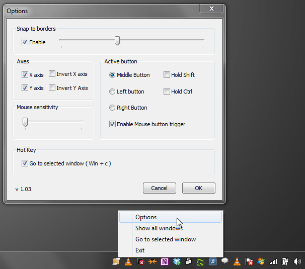
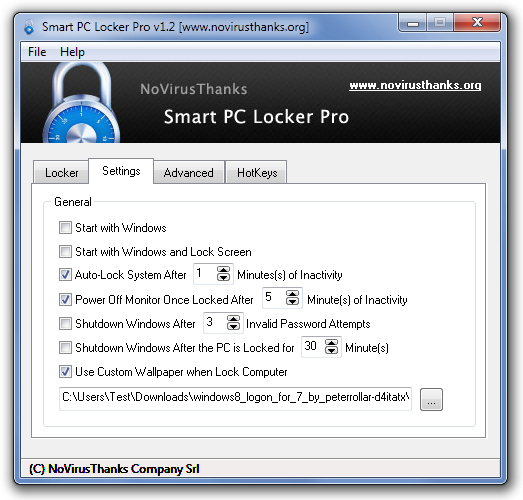
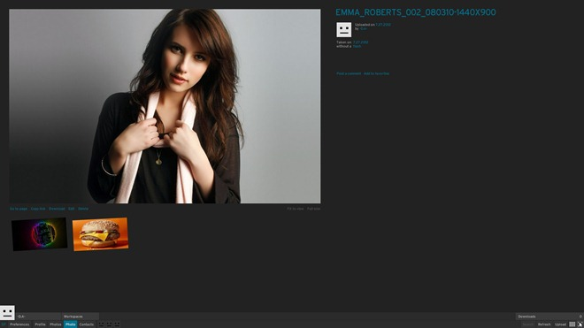
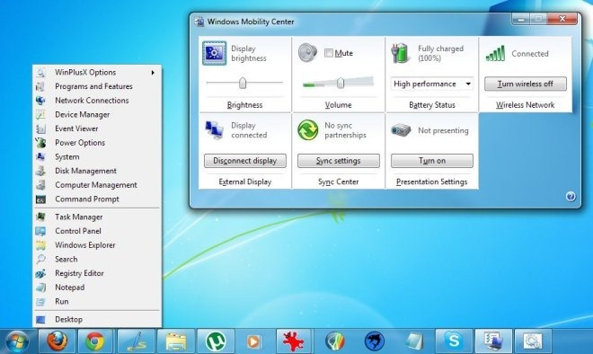
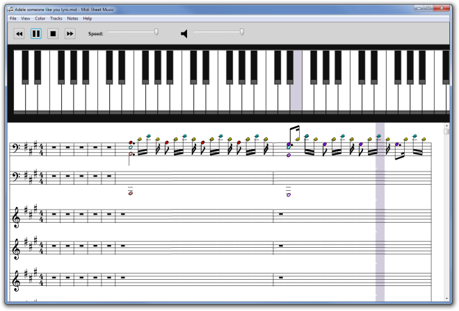

2012 was a great year for tech as a whole, but there was something extra special for us Windows aficionados. That’s right, the long awaited Windows 8 launch, which resulted in a huge influx of applications for the platform. We covered a plethora of Windows applications in 2012, but if you didn’t get the time to go through them all, let us present you with a list of the top 150 free applications that we have cherry-picked from the countless we covered through the entire year, just like we did at the end of 2011. Read on!
1. Spotflux (Cross-platform VPN client that lets you encrypt internet traffic, access blocked websites and remove ads)
2. Google Drive (The official Windows client of Google’s cloud storage and document management service)
3. Asus Multiframe Utility (Arrange and snap windows to 9 screen regions per monitor)
4. OnlineVNC (Connect to a remote PC via TCP/IP protocol and control it using virtual network computing)
5. Blacksmith (Get Mac desktop spaces, launchpad and mission control in Windows)
6. Moborobo (One of the most comprehensive Android and iOS device management tools yet)
7. Clover (Get Google Chrome-like tabbed interface in Windows’ native File Explorer)
8. Freemore Audio Video Suite (An awesome audio and video suite that amalgamates several handy editing and conversion utilities)
9. CrashPlan (Create scheduled data backups to local and remote PCs)
10. Multiplicity (Control up to 9 different computers with a single keyboard and mouse)
11. Mission Control / Expose Clone W7 (Control opened windows the Mac OS X way)
12. Desktop Slider (Create multiple workspaces and slide windows across the screen)

13. KeyRocket (Suggests keyboard shortcuts that you can use for certain actions while you are working)
14. Cloudfogger (Drag and drop files to auto-encrypt & upload to Dropbox, SkyDrive, Google Drive and others)
15. Stoffi (If Windows Media Player and Windows Explorer were to marry, you’d probably get Stoffi)
16. Bitdefender Antivirus Free Edition (Fast, robust, beautiful and reliable, Bitdefender Antivirus Free Edition was the best antivirus app that came across our way in 2012)
17. Microsoft Research Cliplets (Create half-image, half-video animations called ‘cinegraphs’ and save them as GIF, MP4 and WMV)
18. Clickberry Interactive Creator (Add clickable/interactive elements to your videos and share them over Facebook)
19. Cubby (Multi-platform cloud storage with a Windows client that lets you drag and drop folders to sync them between devices)
20. BufferZone Pro (A Sandboxie-like software that lets you launch your favorite applications in a virtual environment)
21. Dropboxifier (Use your Dropbox account to sync game data between different PCs)
22. DDownloads (Looking for an alternative to the ever-popular Ninite? Try DDownloads!)
23. Save.Me (Probably the best clipboard manager for Windows this year)
24. OPSWAT’s Security Score (A great Windows app that analyzes your system against security loopholes)
25. RecImgManager (Lets you backup and restore user applications and settings in Windows 8)
26. GOM Audio (An app for audiophiles from the team behind one of the most popular media players out there)
27. Paragon Go Virtual (Convert your PC into a guest virtual machine configured to run with VMware, Virtual Box, or Virtual PC)
28. Reboot-To (A free alternative to iReboot; lets you select what Windows installation your system will boot into next)
29. KuaiZip (An file archiver and compressor that has the potential to dethrone 7-Zip)
30. Norton Zone Cloud Sharing (Backup, share & sync data securely across Windows, Mac, Android, iOS & the web)
31. 7Conifier (Apply custom application icon packs with a single click)
32. Free Viewer (A file editor and viewer that works with about 100 different file formats)
33. CloudDeck (Fully functional, unofficial desktop client for SoundCloud)
34. Wondershare vDownloader (Download Full HD 1080p videos from all the popular video streaming websites)
35. InstallGuard (Not sure who’s filling up your precious HD space with unwanted apps? It’s time to block unauthorized software installations with InstallGuard.)
36. Ribbon Disabler (Disable the new Ribbon UI in Windows 8′s File Explorer and get the old interface back)
37. NetSpeedMonitor (Monitor upstream and downstream rate from the taskbar and maintain data transfer reports)
38. Bitcasa (Offers 10GB free cloud storage space, and an unlimited plan for $10 a month)
39. Amazon Cloud Drive (The Official Amazon desktop client for Windows & Mac)
40. Espera (A beautiful Modern UI-inspired music player with a ‘Party Mode’)
41. Sys Information (Don’t like Speccy all that much? Here’s another great system information tool that you can try.)
42. WiFi Protector (Protect your wireless internet connection with 256-bit encryption and hide your real IP address)
43. Syncbox (Host your own personal cloud storage space using your local hard drive)
44. EaseUS CleanGeniu (Elegant system optimizer from EaseUS that analyzes your PC’s health, finds duplicate files, cleans the registry and more)
45. Fake Antivirus (Beware of cheap and fake antiviruses. Quickly detect them with this tool before you hurt your wallet.)
46. Pokki For Windows 8 (Our favorite web apps aggregator comes to Windows 8; also restores the Start Orb.)

47. SnapPea (An Airdroid-like Android management application boasting an attractive design)
48. Voxeet (Conference calling app with a unique natural 3D perception feature that makes you feel like you’re sitting next to your contacts)
49. Smart PC Locker Pro (Automatically powers off your PC after invalid login attempts)

50. Kuvva (Automatically changes desktop and Twitter backgrounds on a daily basis)
51. Folder Lock (Easily password-protect or hide files and folders through drag & drop)
52. Feewhee (Use mouse scroll to resize windows and adjust their transparency)
53. DestroyFlickr (Manage your Flickr account from your PC with this Adobe AIR-based desktop app)

54. Network Sorcerer (Comprehensive client control utility for small networks)
55. Perfect Effects 3 (Apply Instagram-like photo filters in layers on an entire image or specific parts of it)

56. WinPlusX (Get Windows 8 Win+X menu in Windows 7 and Vista)

57. QuickPlay (Borderless HD video player with support for up to 4K resolution)
58. AntiScreensaver (Automatically disables the screensaver while specific programs are running)
59. Juicebox (Create HTML-based photo galleries and share them with your friends)
60. SearchMyFiles (Search files and folders using an extremely comprehensive set of filters)
61. MetroTextual (Minimalistic, Modern UI-inspired text editor with syntax highlighting)
62. Send to Kindle (Send documents to Kindle from Windows context menu)

63. FavBackup (Create user-style backups for Firefox, Chrome, Safari, IE and other browsers)
64. Visions (3D image viewer with customizable layouts and a built-in editor)
65. Familiar (Real-time photo sharing and syncing across PC, Mac, Android & iOS)
66. VarieDrop (Create resolution and size-based profiles for quickly resizing images; lets you resize a single image by all profiles at once)
67. SubtitleDownloader (Auto-fetch subtitles on video file name basis)
68. SmoothDraw (Digital painter with Adobe Photoshop-like layer support)
69. Quick PDF Tools (Merge, extract, convert & encrypt PDF files from Windows context menu)
70. Icon Generator Pro (Create HTML5/CS5 icons, logos and star badges)
71. myManga (Automatically downloads episodes for your favorite Manga series)
72. O&O AutoBackup (Automatically backup files to a USB drive when it is plugged in)
73. Elpis (Desktop client for Pandora radio)
74. PDFzen (Edit and manage PDF documents in a collaborative manner)
75. Name My TV Series (Cross-Platform tool to easily rename TV series episodes)
76. USB-AV (Offers malware protection for all connected USB drives)
77. WinMend Folder Hidden (Set password to hide files and folders completely from the Explorer)
78. PlayClaw (Free alternative to Fraps; lets you take screenshots and record in-game video in user-specified frames per second)
79. Midi Sheet Music (Convert music samples to sheet music)

80. SFunKey (Map Function keys to perform additional operations)
81. Lost Photos (Find images saved in your email inbox and directly share them with your friends over Facebook and Twitter)

82. cacheCopy (Copy images based on their age, size and resolution)
83. Autodelete (Delete files and folders by name and date filters)
84. Care4Teen (Parental control tool that creates screencasts upon detection of inappropriate content)
85. Shadow Explorer (Access and export Windows shadow copies according to time filters)

86. Z-VSSCopy (Create, access, delete and mount shadow copies on any Windows versions)
87. ShiftN (Automatically adjust vertical line distortion in photographs of landscapes and buildings)
88. Free Screenshot Capture (Screenshot tool jam-packed with several handy extra features)

89. Mp3 Rename (Powerful, file renaming and rule-based music collection organization)
90. gExplorer (A Google Docs management client for Windows)

91. MediaPortal (HTPC app to play music, stream radio and record live TV)
92. HotKey Resolution Changer (Change monitor resolution using hotkeys)
93. ClipboardZanager (Retain clipboard items even after system reboot)
94. Hulbee Desktop (Hard drive and internet search with word cloud support)
95. Sunrise Seven (Comprehensive Windows 7 tweaking and customization tool)
96. Holdkey (Quickly type accented characters in any text field or program using a hotkey)
97. SymMover (Move installed programs to other folders and disks without having to reinstall)
98. Order In My Folder (Auto-sort files into folders using 8 different criteria)

99. TweakNow PowerPack 2012 (An all-in-one PC maintenance suite that is definitely worth checking out)
100. Image Resize Guide Lite (Lets you resize images without distorting the main subject with its unique Smart Resize Technology)
101. Seam Carving GUI (Content-aware image resizing with removal of unwanted areas)
102. Close All (Quickly shutdown all running Windows applications with a hotkey)
103. Snappy (Capture screenshots on time, mouse and keyboard events)
104. ProxySwap (Quickly switch between proxy servers)
105. IntelliAdmin (Enable Windows 7 Auto Login feature or bypass password entry at Login screen for a user-specified number of times)

106. MComix (Drag & drop to read comics and view plain images with MComix)
107. Jester (Text editor for comparing documents and creating songs parodies; suggests rhyming words)
108. Free Video to GIF Converter (Create GIFs from frames of videos)
109. PasteBin (Create, sort and manage text snippets)
110. Photo Basic 3 (Comprehensive image editing & archiving tool)
111. Textaizer Pro (Convert images into text mosaic and ASCII art)
112. Tiggit (Open-source indie game downloader and launcher)
113. Geek Uninstaller (Portable uninstaller to completely wipe off all traces of an application from the computer)
114. Windows Tweaker (100+ tweaks for system utilities and UI components)
115. Panorama Perfect (A simple but efficient panoramic photo creator)
116. Media Preview (Enable thumbnail previews of unsupported video formats)
117. SyncWrite (Portable syntax editor with support for tree structure)
118. Rumshot (Take screenshots and create themed previews with them)
119. AutoUP (Scans for and downloads Windows system and application updates)
120. Eassos Recovery (A powerful file recovery software that can recover even lost partitions)
121. Firewall App Blocker (Lets you easily add applications to the Windows Firewall block list via drag and drop)
122. WinLock (Lock any application window and minimize it to system tray)
123. RawTherapee (A powerful and feature-rich RAW image processing software)
124. MultiWall (Set different wallpapers on your multi monitor luxury, or span one across all of them)
125. sRemote (Allows you to remotely execute commands and control your PC via Gmail account)
126. DXPurge (Auto-Removes those .DS_Store files while transferring data from OS X to Windows)
127. WinMend File Splitter (A powerful file splitter that lets you merge files without requiring the application itself)
128. WinOwnership (An extremely easy way to gain full control of system files)
129. Inesoft Cash Organizer (A superb financial management software with cloud support)
130. File Secure Free (A handsome security tool with an extra topping of file backup, shredding and encryption features)
131. Advanced PDF Utilities (A huge collection of PDF tools within one package)

132. Toolwiz BSafe (Powerful data encryption tool that lets you create encrypted file containers and mount them as virtual drives)
133. John’s Background Switcher (Arguably one of the most comprehensive wallpaper customization tools for Windows)

134. PicBackMan (One of the best software to backup images from multiple social networks to a number of cloud services including Dropbox and SkyDrive)
135. Desktop Modify (Rearrange desktop icons into a wide-array of presets and shapes)
136. Taskbar Thumbnails Tuner (Tweak taskbar thumbnail previews in Windows 8)
137. AnyMenu (Add custom shortcuts for files and applications, and access them with the middle mouse button)
138. Mosaizer Pro (Photo-to-mosaic converting application with several customization options and patterns to choose from)

139. Windows + R Alias Manager (Create custom Run aliases for frequently used applications and files)
140.Crystal Anti-Exploit Protection (Protect your system against unintended downloads)
141. DesktopSaver (An open source application that allows users to save the location of desktop icons)
142. SyncLib (Easily synchronize and share photos, music and videos across different platforms)
143. Instagrille (An app for Pokki that lets you browse and download Instagram photos on your desktop)
144. NexusFont (The best font manager we’ve come across this year)
145. Wise Program Uninstaller (Robust application uninstaller that’s several times better than Windows’ native Add/Remove program)
146. CarotDAV (Manage multiple cloud services from one window)
147. RunAlyzer (System startup manager designed to collect all the programs and their registry keys under one hood)
148. Rainlendar (A light, well-designed to-do list manager and calendar app for Windows)

149. Toolbar Cleaner (Remove unwanted toolbars from Internet Explorer, Firefox and Google Chrome)
150. NexusFile (Dual pane file manager with FTP & archive extraction support)
That’s it for our 2012 compilation of best Windows applications. Did you find any new apps here that you liked? We’d love it if you mentioned your favorite ones in the comments section below.
Don’t forget to share this post with your friends, and do stick around; we have compilations for other platforms coming up next. Happy New Year!
You might also want to check out our other end-of-year compilations:
35 Best Windows 8 Store Of 2012
40 Best Windows Phone Apps Of 2012
Fawad Mir and Waqas Ahmed contributed to this post


{kind=link}
{kind=link}
{kind=link}
{kind=link}
{kind=link}
{kind=link}
{kind=link}
{kind=link}
{kind=link}
{kind=link}
{kind=link}
{kind=link}
{kind=link}
{kind=link}